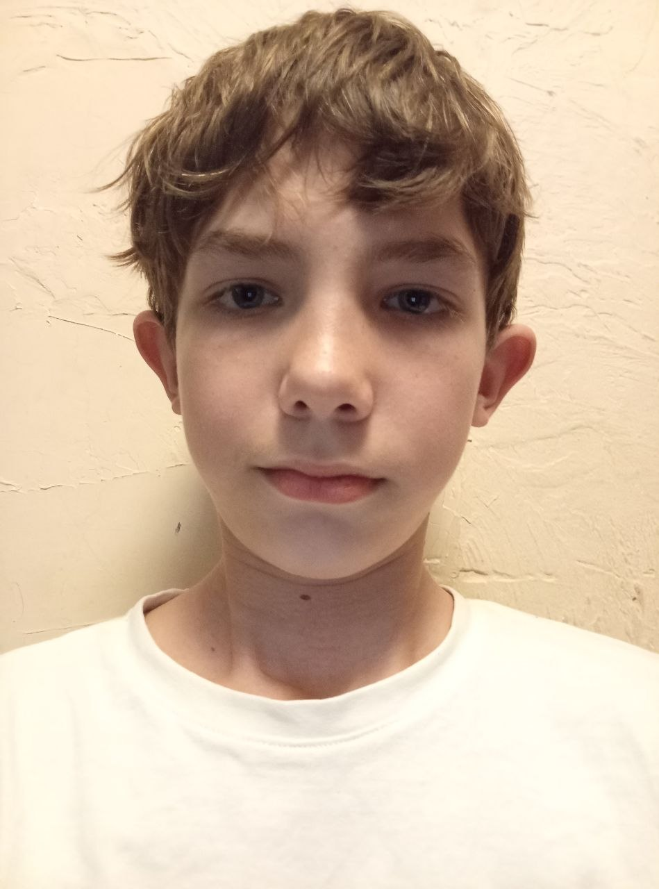

Всім, хто буде читати цей сайт, хочу трохи розповісти про себе. Мене звати Єгор, мені 13 років, і я навчаюся в 7 класі. Моя головна мрія — почати розробляти ігри на рушії Unity і завдяки цьому стати відомим серед інді-студій. Я роблю все, щоб моя мрія здійснилася: відвідую різні курси, самонавчаюся, дивлюся навчальні відео тощо. Коли моя мама повідомила мені про можливість ходити на курси, я не дуже хотів приходити на заняття, навіть якщо вони були онлайн. «Я ж розробник ігор, а не сайтів», — думав я. Але згодом я зрозумів, що це може допомогти мені в майбутньому. І зараз, коли я майже завершив курс, я усвідомив, що був неправий. Тепер я вмію створювати різні сайти, і це робить мене трохи ближчим до здійснення моєї мрії.
Про мене

про мою сім'ю
У мене дуже велика сім'я. У мене в сім'ї цілих 8 людей (5 дітей і 3 дорослих). Почати можно із мого найстаршого брата. Його звуть Даня йому 20 років і я порахував його за дорослого. другими по черзі йдут мої дві сестри близнючки Єва і Оля. ЇМ по п'ят років і в наступному році вони вже пійдуть у школу в перший клас. третій іде мій молодший брат Іван. Йому 11 років і він ходить в 5 клас. Остання моя сестра це наймолодша сестра на ім'я Ліна. їй Півтори року і вона вже починає говорити. Ім'я мого батька Олег. Він військовий і парцює в морському підрозділі прикордонної служби "ДОЗОР". На жаль на момент написання данного сайту він отримав поранення в руку і зараз він знаходиться в лікарні в Одессі. мою маму звати Татьяна і вона не працює. вона Домогосподарка. Всі гороші в сім'ю заробляє Старший брат та батько.


Відео
у вигляді таблиці це можна подати так:
| № | Ім'я | кількість IQ | моя оцінка героя від 1 до 10 |
|---|---|---|---|
| 1 | Wendy | 85 | -99999 |
| 2 | Combo | 87 | 4 |
| 3 | Krazy-8 | 88 | 5 |
| 4 | Daniel Wormald | 89 | не знаю його |
| 5 | Tuco Salamanca | 91 | 3 |
| 6 | Ted Beneke | 95 | 1 |
| 7 | Brock Cantillo | 97 | 7 |
| 8 | Declan | 99 | не знаю його |
| 9 | Badger | 101 | не знаю його |
| 10 | Andrea Cantillo | 102 | 6 |
| 11 | Vare Margolis | 103 | 8 |
| 12 | Walter White Jr. | 106 | 10 |
| 13 | Patrick Kuby | 106 | не знаю його |
| 14 | Marie Schrader | 107 | 5 |
| 15 | Francesca Liddy | 107 | не знаю її |
| 16 | Lacho Salamanca | 108 | 7 |
| 17 | Marco Salamanca | 108 | 7 |
| 18 | Hector Salamanca | 108 | 9 |
| 19 | Huell Babineaux | 109 | не знаю його |
| 20 | Page Kettleman | 109 | не знаю його |
| 21 | Victor | 110 | 5 |
| 22 | Steven Gomez | 110 | не знаю його |
| 23 | Skyler White | 111 | 8 |
| 24 | Todd Alquist | 112 | 6 |
| 25 | Skinny Pete | 113 | 1 |
| 26 | Nacho Varga | 113 | не знаю його |
| 27 | Jack Welker | 113 | не знаю його |
| 28 | Tyrus Kitt | 114 | не знаю його |
| 29 | Ed Galbraith | 116 | не знаю його |
| 30 | Don Eladio | 117 | не знаю його |
| 31 | Old Joe | 118 | не знаю його |
| 32 | Lydia Rodarte-Quayle | 123 | 4 |
| 33 | Hank Schrader | 124 | 10 |
| 34 | Jesse Pinkman | 127 | 6 |
| 35 | Kim Wexler | 128 | не знаю його |
| 36 | Howard Hamlin | 128 | не знаю його |
| 37 | Donald Margolis | 129 | 10 |
| 38 | Barry Goodman | 130 | не знаю його |
| 39 | Gretchen Schwartz | 131 | 1 |
| 40 | Elliott Schwartz | 132 | 1 |
| 41 | Jimmy McGill | 135 | 9 |
| 42 | Werner Ziegler | 136 | не знаю його |
| 43 | Gale Boetticher | 136 | не знаю його |
| 44 | Lalo Salamanca | 138 | не знаю його |
| 45 | Mike Ehrmantraut | 139 | 10 |
| 46 | Chuck McGill | 140 | не знаю його |
| 47 | Gustavo Fring | 141 | 10 |
| 48 | Walter White | 145 | 10 |